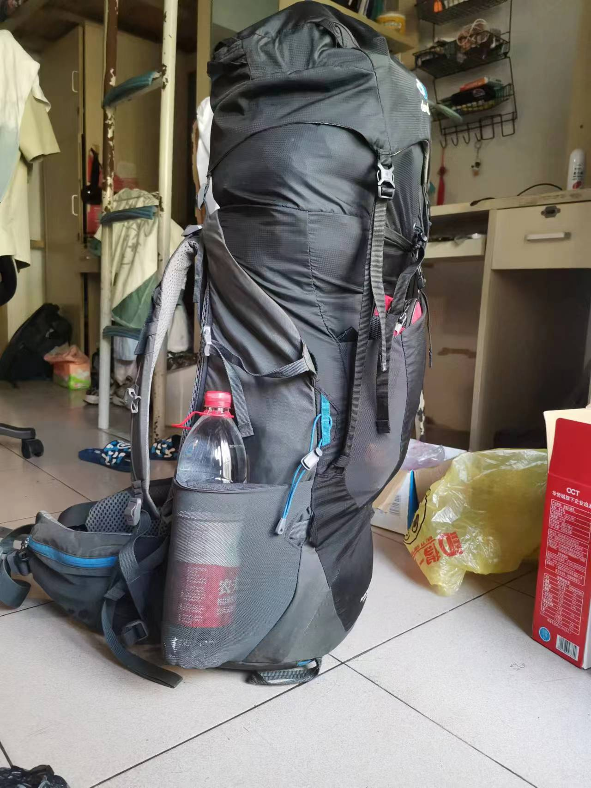
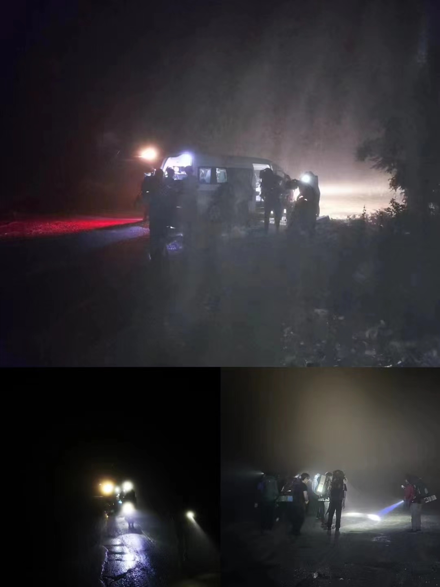
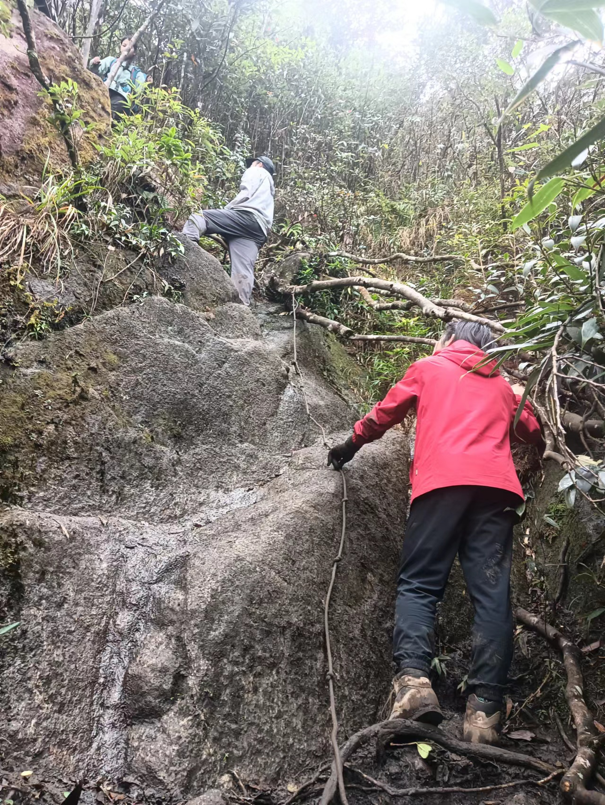
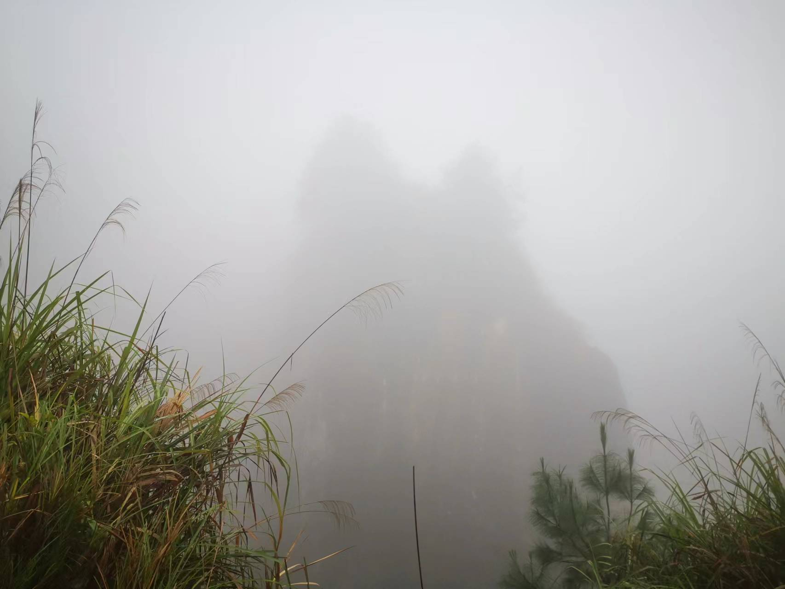
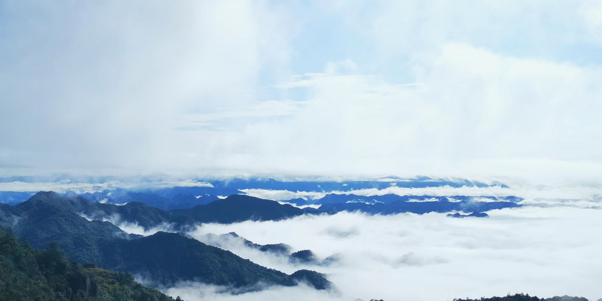
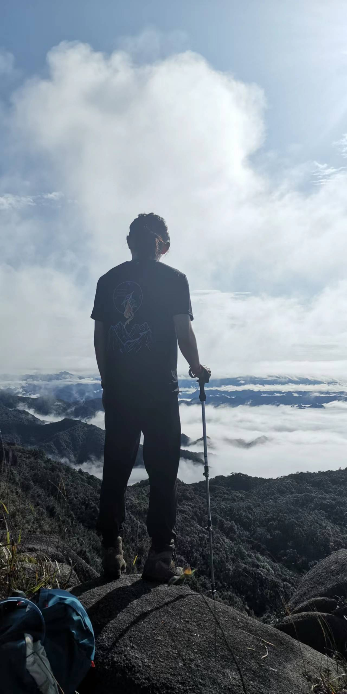

2023年双十一大东山
21年国庆的时候来爬过一次大东山，当时山队队长黄妈力推大东山，但是他自己没来，结果大伙被竹林抽脸抽傻了，一起大喊“黄妈退钱”。我也是其中一员，但没想到自己今年又来了。
先放几张前年的照片：
11.10
十号照常买路餐装包出发，这次因为知道要进林子，所以把防潮垫塞登山包里面了，装的包依旧符合“可自行站立”的标准：

接着就是坐四五个小时的车到达连州，近日应该是下过雨，地上都是湿漉漉的泥水，大伙戴着头灯在黑夜中找营地，有一种大片的感觉：

11.11
早上拖得有点久，六点起床，八点才出发，比预计的出发时间晚一个小时1。
刚出发的时候前队还有香菜、羊屎和我，但随着我和香菜几个猪突猛进之后，羊屎就不见了。大清早爬坡还是很累的，边爬边喘气。忽然听见上方有人交谈的声音，和香菜嘎嘎冲了一段时间才发现前面是另外一队爬大东山的，交谈后发现有个是中大医学院的教授∑(ι´Дン)ノ，太尴尬了，得赶紧跑路(ﾟ∀。)
好像林子也没前年那么讨厌。
到营地前有三段绳降的地方，和香菜一起扶人下来。

前一天晚上山里应该也下过雨，有些缺乏日照的路段十分泥泞，所以不太好走，哼哧哼哧跑去照看后队了。
路上红娘臀降把裤子划破了，白花花的pp露出来了2。
路上除了林子就是雾，雾后若隐若现的山倒是有一种神秘的感觉。

五点半左右到前年的营地后迅速搭帐篷开始吃饭，走了一天可把大伙饿坏了。吃饱喝足就到了起外号以及K歌环节，一人献唱一首歌，以前不知道野草这么多歌王(°ﾛ°٥)。
回到帐篷本来想和麻瓜聊会天，结果躺了几分钟就被袭来的困意淹没了。毕竟前一晚就睡了五个小时。
11.12
第二天有十一十二公里的路程，我们很担心下山时间太晚，结果第二天的路意外地好走。
早上九点的时候雾气散开了，阳光照在山头，前后队兴奋地隔着山头对喊。

像是天池一般的云海，实在是赏心悦目，让人很难忍住对其狂按快门。

赶路的脚步缓了下来，大伙拍足瘾后才不舍地前行，不久后雾气由重新聚起，我们也重新进了林子。
和村花村姑在后队偷偷喝了两瓶可乐ε٩(๑> ₃ <)۶з
羊屎:”走太快会错过很多风景”。说罢起包走人
我:”说的不错”。看他走后招呼村花拿可乐出来喝。
因为路很好走，所以两点多就到了前年野狗摔下去的瀑布。想想还是后怕，那个瀑布池看起来可以把人不吐骨头地吃掉。想下去游泳的红娘也打了退堂鼓。
去了前年没去的温泉，也是人生第一次进温泉，感觉……和普通热水澡没什么区别？不过毕竟是在野外，热水池子倒是显得格外神奇。
对了，忘记说了，本次新人的外号是：
- 傻鱼
- 蚂蚁
- 鸭蛋
- 二狗
- 狗熊
暂时先写到这，之后想到啥再补吧。（玩COC玩的）
1. 我保证我和红娘的甜蜜双排（上厕所）没占多少时间 ↩
2. 前文提过我和甜蜜双排，所以应该可以看出“红娘”是一位男性 ↩